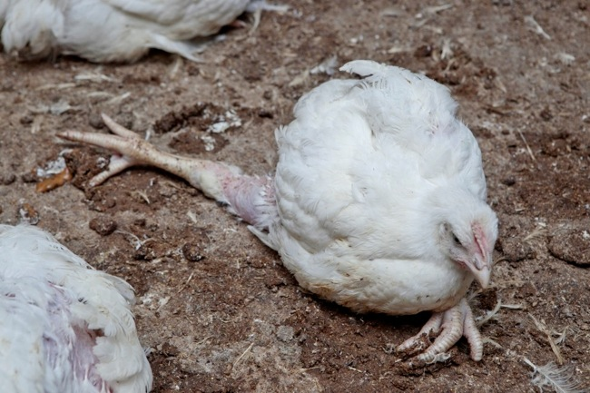
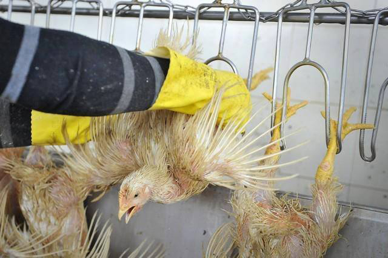
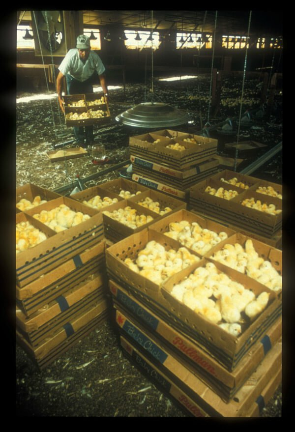

The chicken and eggs you buy at the supermarket do not come from small farms where chickens happily live out there lives until its their time to go. Intead, chickens are forced to live in extremely small cages until they are brutally killed.
Chickens do not do well with living in small areas. They tend to get agitated and peck at eachother. To combat this, the chicken industry cuts off their beaks when they are babies, so they cannot hurt eachother.
At the slaughterhouse, chickens are hung upside down and scalded alive. Other means of slaughter include decompression and gas chambers
Now you might be wondering what is so bad about the egg industry, taking eggs from a chicken doesn't cause it any harm right? You are very wrong. The hens that hatch the eggs are subjected to horrendous conditions. They are used to produce eggs until they no longer produce them fast enough, and then they are shipped off to the slaughter house.
Any male chicks that are born are immediatly killed, since they are of no use to the chicken and egg industry. They are either suffocated or ground up alive.
Next time you go to make eggs for breakfast, or cook a chicken remember the pain and suffering that occurred for you to have your meal.